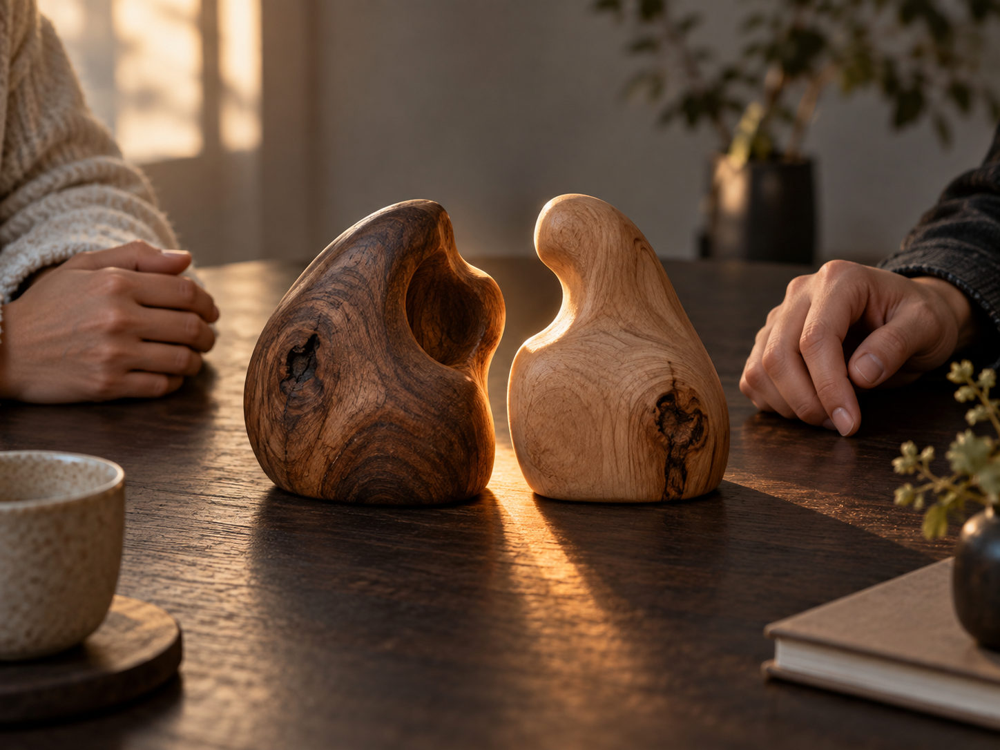

前兩天講的心合跟體合，都是我們跟自己。
今天這一個，是我們跟別人。
二十歲那年，我談了一場感情，談了十年。
那十年吵過很多次。有幾次吵得很兇，我到現在都還記得。
以前的我很不會表達。
因為小時候一直氣喘，親戚聚會我總是坐在角落那一個，
兄弟打球也沒人想跟我同隊。
從那之後我就不太願意說出自己想要什麼。
所以在感情裡，我也講不出來。
她問我怎麼了，我說沒事。
她說你根本不在乎我，我就更不想講。
我那時候以為，不講就是不吵，不吵就是保護。
後來我才知道，不講才是傷害。
因為我沒有自信，所以我不會表達。因為不會表達，造成她的誤會。
因為她的誤會，我們不斷互相傷害。而每一次互相傷害，又讓我更沒有自信。
這個圈圈，我們轉了十年。
那十年裡，我一直有一個藉口。
另一半脾氣怎麼這麼不好，都是她的問題。
現在回頭看，錯的是自己，
她的脾氣不是她的問題，
那是我們兩個人一起不合的結果。
她要的其實很簡單。她要我講。
而我用沉默，談了一場十年的愛。
那根刺為什麼會長在他身上
孔子說，君子和而不同，小人同而不和。
相處和諧，且允許別人跟你不一樣
人跟人都有刺，也都有凹洞。

以前我以為，人合就是讓對方的刺嵌進我的心裡，卻不會受傷。
針對對方刺的形狀，形成自己的凹洞。
現在我覺得，這句話還要多一層。
人合，不是讓對方的刺刺穿你。
而是你看懂，那根刺為什麼會長在他身上。
伴侶一直問你要去哪，可能不是想控制你，是他怕被丟下。
媽媽一直叫你多穿一件，可能不是嫌你不會照顧自己，那是她現在唯一還能為你做的事。
主管一定要看到報表，可能不是不信任你，是他上面也有人在盯他。
客戶一直說要再考慮，可能不是嫌貴。穩定型的人不是怕買貴，是怕買了家人覺得貴。
看懂了不代表你要全部接受，也不代表你不能生氣。
看懂只是讓你在開口之前，多知道一件事。
真正的愛，不是用自己習慣的方式愛對方，而是用對方要的方式愛他。
我一直以為我在保護她，其實我只是在保護那個不敢開口的自己。
但是看懂對方，不等於什麼都要忍。
那十年我還犯了另一個錯。我以為愛就是忍。
愈痛代表愈愛，這句話害了很多人，也害了以前的我。
痛苦是用來決定放手的速度，並不是相愛的程度。
合，不是忍耐。和，也不是討好。
能夠不同，仍然彼此尊重。
能夠有界線，仍然往同一個方向前進，這才叫人合。
父母、子女、伴侶、朋友、上下級，都是如此。
那段感情結束之後，我又花了很久才真的走出來。
一段感情的結束，需要一個人徹底放下才會結束。
現在我對親近的人，會讓自己把話講出來。
就算講得不好聽，就算講完會尷尬，就算講完會覺得自己軟弱。
因為我很清楚，沉默不會保護任何人，更可能造成傷害。
它只會讓兩個本來想靠近的人，各自站在原地，等對方先開口。
『從來沒有不懂說話的人，只有不願開口的人。』
明天是最後一篇，世界合。
我會講我人生第一場演講，台下只有三個人的那一天。
你的業績卡住了嗎？
我也走過那段「心累」的路，所以我懂那種明明很努力，卻一直卡在同一關的感覺。
如果你想知道：
你的「業務原廠設定」，適合主動開發，還是穩定經營？
你真正卡住的地方，是「開發」、「開口」，還是「成交」？
企業團隊想提升成交力，可以怎麼設計內訓？
想學更多，或邀約企業內訓，歡迎從這裡認識我：
Instagram：eintaixin
個人官網